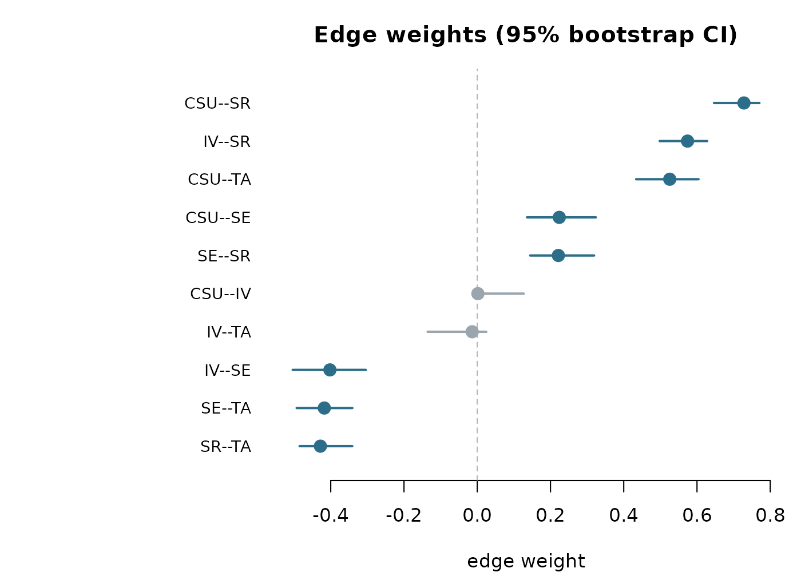
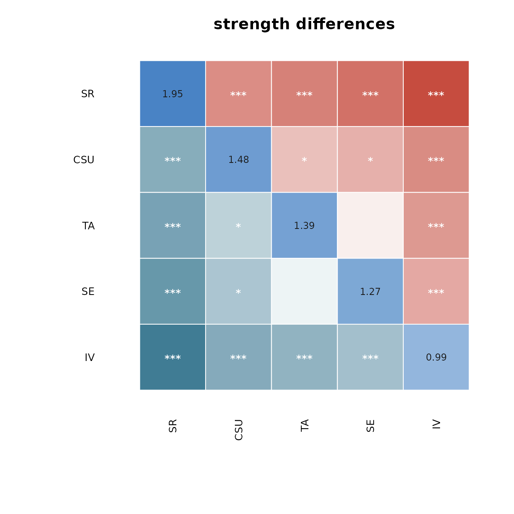

Visualizing bootstrap, centrality and difference results (base R)
Source:vignettes/visualizing-networks.Rmd
visualizing-networks.Rmdpsychnets ships native base-R plot
methods for every diagnostic verb, so you can inspect a model’s
stability and structure with no additional packages
(graphics and grDevices ship with R). This
vignette walks through them on the bundled SRL_Claude
self-regulated-learning data (300 respondents, five MSLQ subscales). A
companion vignette, “Visualizing networks with cograph”, shows
the richer cograph renderings of the same results.
Every plot is an S3 plot() method on a result object —
call plot() on what a verb returns; there is no
bracket-subsetting to assemble.
Estimate a network
X <- as.matrix(SRL_Claude)
fit <- ebic_glasso(X)
fit
#> <psychnet> glasso network
#> nodes: 5 edges: 10 (undirected)
#> lambda: 0.009013 gamma: 0.5
#> optimality (KKT residual): 3.92e-10Centralities
net_centralities() returns a tidy table;
plot() draws it.
ct <- net_centralities(fit, measures = c("strength", "expected_influence", "betweenness"))
ct
#> node strength expected_influence betweenness
#> 1 CSU 1.4794795 1.4794795 0.0000000
#> 2 IV 0.9920086 0.1598207 0.3333333
#> 3 SE 1.2652845 -0.3743445 0.0000000
#> 4 SR 1.9520259 1.0956629 0.6666667
#> 5 TA 1.3851959 -0.3340278 0.3333333type = "bar" (the default) gives one sorted lollipop
panel per measure:
plot(ct)
type = "line" gives the qgraph-style faceted centrality
plot — one panel per measure, nodes sharing a single vertical order,
each panel on its own (raw) axis:
plot(ct, type = "line")
Use scale = "z" or scale = "relative" if
you prefer a standardised or a 0–1 axis instead of raw values.
Bootstrap accuracy
net_boot() resamples and re-estimates;
plot() defaults to the edge-weight confidence intervals,
sorted by the observed weight (edges whose interval excludes zero are
emphasised).

Bootstrapped centrality intervals, one panel per measure:
plot(bs, type = "centrality")
The bootstrapped difference “significance box” matrices — which edges, or which node strengths, differ from one another:
plot(bs, type = "edge_diff")
plot(bs, type = "centrality_diff", measure = "strength")
Difference test
difference_test() is the tidy table of pairwise
differences. Its plot() has two styles: the
significance-box matrix ("box", the default) for
which pairs differ, and a forest plot ("forest")
for how big each difference is with its confidence
interval.
dt <- difference_test(bs, type = "strength")
plot(dt) # box matrix
plot(dt, style = "forest") # forest plot
Case-dropping stability
net_stability() drops increasing fractions of cases and
correlates the subset centralities with the full-sample ones;
plot() shows the curves, a ±1 SD band, the acceptance
threshold, and the CS-coefficient per measure.
st <- net_stability(X, method = "glasso",
drop_prop = seq(0.1, 0.8, 0.1), iter = 25)
plot(st)
Network comparison test
net_compare() permutation-tests two networks. Plot the
global-strength (M) and structure (S) permutation nulls, or the per-edge
differences.
cmp <- net_compare(X, as.matrix(SRL_GPT), iter = 250)
plot(cmp) # global strength (M)
plot(cmp, type = "edges") # per-edge differences
Summary
| Result object (verb) |
plot() options |
|---|---|
net_centralities() |
type = "bar" / "line";
scale = "raw"/"z"/"relative"
|
net_boot() |
type = "edges"/"centrality"/"edge_diff"/"centrality_diff"/"predictability"
|
difference_test() |
style = "box"/"forest"
|
net_stability() |
— |
net_compare() |
type = "strength"/"structure"/"edges"
|
All of the above use only base R. For the estimated network itself,
plot(fit) delegates to cograph::splot() — see
the companion cograph vignette.